Social and Semantic Network Analysis
This week our tutorial will cover network analysis. Network analysis focuses on patterns of relations between actors. Both relations and actors can be defined in many ways, depending on the substantive area of inquiry. For example, network analysis has been used to study the structure of affective links between persons, flows of commodities between organizations, shared members between social movement organizations, and shared words between texts. What is common across these domains is an emphasis on the structure of relations, which serves to link the micro- and macro-levels.
Understanding network data structures
Underlying every network visualization is data about relationships. These relationships can be observed or simulated (that is, hypothetical). When analyzing a set of relationships, we will generally use one of two different data structures: edge lists or adjacency matrices.
Edge lists
One simple way to represent a graph is to list the edges, which we will refer to as an edge list. For each edge, we just list who that edge is incident on. Edge lists are therefore two column matrices that directly tell the computer which actors are tied for each edge. In a directed graph, the actors in column A are the sources of edges, and the actors in Column B receive the tie. In an undirected graph, order doesn’t matter.
In R, we can create an example edge list using vectors and data.frames. I specify each column of the edge list with vectors and then assign them as the columns of a data.frame. We can use this to visualize what an edge list should look like.
personA <- c("Mark", "Mark", "Peter", "Peter", "Bob", "Jill")
personB <- c("Peter", "Jill", "Bob", "Aaron", "Jill", "Aaron")
edgelist <- data.frame(PersonA = personA, PersonB = personB, stringsAsFactors = F)
print(edgelist)
## PersonA PersonB
## 1 Mark Peter
## 2 Mark Jill
## 3 Peter Bob
## 4 Peter Aaron
## 5 Bob Jill
## 6 Jill Aaron
What are the upsides of using the edge list format? As you can see, in an edge list, the number of rows accords to the number of edges in the network since each row details the actors in a specific tie. It is therefore really simple format for recording network data in an excel file or csv file.
What are the downsides? The first is practical - it is impossible to represent isolates using an edge list since it details relations. There are ways to get around this problem in R, however. The second is technical - edge lists are not suitable for data formats for performing linear algebraic techniques. As a result, we will almost always convert and edge list into either an adjacency matrix, or into a network object.
Adjacency matrices
Adjacency matrices have one row and one column for each actor in the network. The elements of the matrix can be any number but in most networks, will be either 0 or 1. A matrix element of 1 (or greater) signals that the respective column actor and row actor should be tied in the network. Zero signals that they are not tied.
We can use what we learned in the last tutorial to create such a matrix. An example might look like this:
adjacency <- matrix(c(0,1,0,1,0,1,0,1,0,1,0,1,0,1,0,1,0,1,0,1,0,1,0,1,0), nrow = 5, ncol = 5, dimnames = list(c("Mark", "Peter", "Bob", "Jill", "Aaron"), c("Mark", "Peter", "Bob", "Jill", "Aaron")))
print(adjacency)
## Mark Peter Bob Jill Aaron
## Mark 0 1 0 1 0
## Peter 1 0 1 0 1
## Bob 0 1 0 1 0
## Jill 1 0 1 0 1
## Aaron 0 1 0 1 0
What are the upsides of using the adjacency matrix format? Adjacency matrices are the most fundamental network analysis data format. They undergird all of the analytical techniques we will show you later on. They are also much more efficient than edge lists. For example, imagine searching for whether Peter and Jill are friends in an adjacency matrix as opposed to an edge list. In the adjacency matrix, we would go to Peter’s row and Jill’s column and we would find either a 1 or a 0, giving us our answer. In an edge list, we would have to search through each edge, which might seem simple in a dataset with only 5 people, but as the edge list grows, it will scale linearly with the number of edges.
What are the downsides? It is really difficult to record network data with an adjacency matrix. They are better suited for computers than people.
Producing a skip-gram matrix for semantic network analysis and embedding models
In previous lessons, we learned how to fit topic models to many different texts (for example, the Wikipedia pages of philosophers). But what if, as is often the case, you only have a single text, and want to visualize its internal structure? Or, as is the case in embedding models, you want to model not just the set of words that each text has, but rather, the precise sequences of words that are employed in each text. Doing so should reveal not just composition, but how words relate to each other within and across texts; or put differently, the local context in which words appear.
To produce such models, we need a different kind of data from the raw co-occurence matrices we made use of before. We will use what is called a skip-gram model, which counts the number of times a given word appears near another word, with near-ness being defined as some kind of window, say, of 4 or 5 words. A skip-gram window of two, for example, would count the number of times word j appears within the two words immediately before or after word i.
Rather than building a skip-gram model ourselves, we can just use the CreateTcm() function from the textmineR package of last lesson to turn a text of interest into a skip-gram.
First, let’s install the textmineR package, load in some other necessary packages, and grab a text, The Constitution of the United States of America, from the Gutenberg Project to play around with.
install.packages("textmineR")
# Load in packages
library(gutenbergr)
library(tidyverse)
library(tidytext)
library(textmineR)
## Loading required package: Matrix
##
## Attaching package: 'Matrix'
## The following objects are masked from 'package:tidyr':
##
## expand, pack, unpack
##
## Attaching package: 'textmineR'
## The following object is masked from 'package:Matrix':
##
## update
## The following object is masked from 'package:topicmodels':
##
## posterior
## The following object is masked from 'package:stats':
##
## update
# Download the constitution
constitution <- gutenberg_download(c(5), meta_fields = "title")
## Determining mirror for Project Gutenberg from http://www.gutenberg.org/robot/harvest
## Using mirror http://aleph.gutenberg.org
# Tokenize the constitution
tokenized_words <- unnest_tokens(constitution,
word,
text,
strip_punct = F)
# Load in stop words
data(stop_words)
# Drop stop words as well as useless puntuation
word_counts <- anti_join(tokenized_words, stop_words, by = "word")
word_counts <- anti_join(word_counts,
data.frame(word = c("*", ";", ",", ":"),
lexicon = "bad punctuation",
stringsAsFactors = F),
by = "word")
# Get rid of the Gutenberg header
word_counts <- word_counts[72:nrow(word_counts),]
# Put it all back together
constitution <- paste0(word_counts$word, collapse = " ")
All of the above should be familiar: it is the same code we used in both the previous two tutorials. Now, let’s look at some new code. The textmineR package has a super useful function - CreateTcm() - which produces a skip-gram matrix, just like we want. All we have to do is specify the texts we want to run the skip-gram model on, the size of the skip-gram window, and how many cpus we want to use on our computer.
library(textmineR)
skip_gram_constitution <- CreateTcm(doc_vec = constitution,
skipgram_window = 10,
verbose = FALSE,
cpus = 1)
The result is a word-to-word matrix, where cells are weighted by how frequently two words appear in the same window. We can easily turn this into a network.
From data to networks
To turn our raw network data into an actual network, we will first convert this skip-gram matrix to a similarity matrix, where words are given similar weights if they occur in similar contexts together. To do that, we’ll use the proxy package. First we install it.
install.packages("proxy")
Then, we can use the simil function to measure the similarity between words in terms of their co-occurrences with other words. We’ll use cosine distance here, but there are many other distance measures you could consider using.
##
## Attaching package: 'proxy'
## The following object is masked from 'package:Matrix':
##
## as.matrix
## The following objects are masked from 'package:stats':
##
## as.dist, dist
## The following object is masked from 'package:base':
##
## as.matrix
simil_constitution <- simil(as.matrix(skip_gram_constitution), method = "cosine")
Cool! Next, we can use igraph, a user-maintained package in R, created for the sole purpose of analyzing networks. Installing igraph gives us a bunch of new tools for graphing, analyzing and manipulating networks, that don’t come with base R. The first step then is to install igraph. As always, to install a new package, we use the install.packages() function. It takes a character argument that is the name of the package you wish to install.
install.packages("igraph")
Now that igraph is installed, we need to use the library() function to load it into R.
##
## Attaching package: 'igraph'
## The following object is masked from 'package:text2vec':
##
## normalize
## The following objects are masked from 'package:dplyr':
##
## as_data_frame, groups, union
## The following objects are masked from 'package:purrr':
##
## compose, simplify
## The following object is masked from 'package:tidyr':
##
## crossing
## The following object is masked from 'package:tibble':
##
## as_data_frame
## The following objects are masked from 'package:stats':
##
## decompose, spectrum
## The following object is masked from 'package:base':
##
## union
This will allow us to use all of igraph’s functions. To analyze networks, igraph uses an object class called: “igraph”. We therefore have to convert our skip-gram matrix into an igraph object. Specifically, for our skip-gram matrix, we can use the graph.adjacency() function to do so. We will set weighted = T so that edges are weighted by their skip-gram value (words that more frequently appear in the same context will have higher weights.) Before we do that, we should also set the diagonal of the matrix to 0, so that words aren’t tied to themselves.
skip_gram_constitution <- as.matrix(skip_gram_constitution)
diag(skip_gram_constitution) <- 0
constitution_network <- graph.adjacency(skip_gram_constitution, weighted = T)
Exploring your network
We finally have a network in R! So.. what next? Well we can read a summary of it by typing its name into R.
## IGRAPH d512784 DNW- 723 11804 --
## + attr: name (v/c), weight (e/n)
## + edges from d512784 (vertex names):
## [1] ability->affirm ability->army ability->commander
## [4] ability->defend ability->preserve ability->solemnly
## [7] ability->swear ability->chief ability->execute
## [10] ability->faithfully ability->protect ability->affirmation
## [13] ability->oath ability->constitution ability->office
## [16] ability->section ability->president ability->united
## [19] abr ->attest abr ->baldwin abr ->butler
## [22] abr ->cotesworth abr ->jackson abr ->pierce
## + ... omitted several edges
The first line - which begins with IGRAPH DN - tells us constitution_network is an igraph object and a directed network (DN), with N nodes and E edges.
The next line tells us some attributes of the nodes and edges network. At the moment, it only has the attribute “name” for the vertices (v/c). We can look at the values of the “name” attribute with the V()$ function.
head(V(constitution_network)$name)
## [1] "ability" "abr" "absence" "absent" "absolutely"
## [6] "accept"
Finally, the last part gives us a snapshot of the edges present in the network, most of which are omitted.
We can visualize the network using the plot() function.
plot(constitution_network)
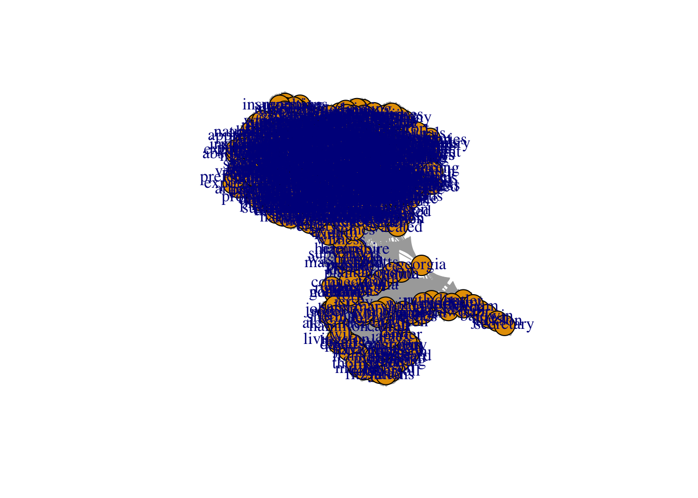
The default visualization is pretty ugly… In the next section, we will learn how to improve the aesthetics of our network visualizations.
The Basics of Visualization
Let’s start by adjusting the basic visualization. The most basic things we can change are the sizes and colors of nodes. When your network is large, often the nodes will appear too large and clumped together. The argument vertex.size allows you to adjust node size (vertex is the graph-theory term for node!).
plot(constitution_network, vertex.size = 2)
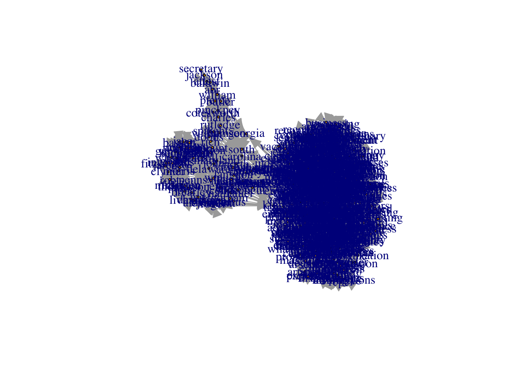
This is the basic way you change the settings of the plot function in igraph - you put a comma next to the next to the network object, type the name of the setting you want to change, and set it to a new value. Here we set vertex.size to 10. When you don’t change any settings, R will automatically use the default settings. You can find them in the help section for that function (i.e. by typing ?plot.igraph, for example). All you have to do is remember the names of the various settings, or look them up at: http://igraph.org/r/
The nodes have an ugly light orange color… We can use vertex.color to change their color to something nicer. We can also remove the ugly black frames by changing the vertex.frame.color setting to NA.
Useful Link
You can find a list of all the named colors in R at http://www.stat.columbia.edu/~tzheng/files/Rcolor.pdf
plot(constitution_network, vertex.size = 2, vertex.color = "tomato")
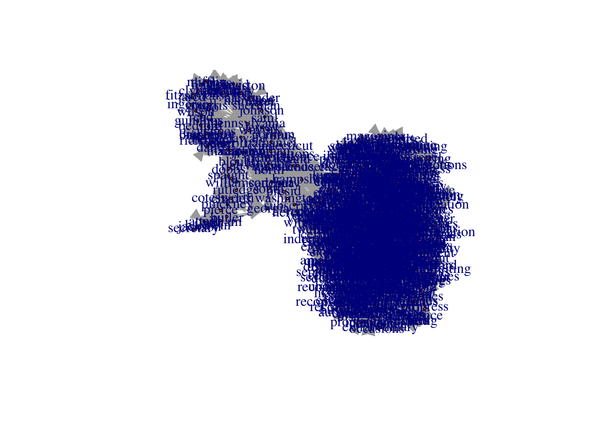
The labels are too large and blue. We can adjust label size with vertex.label.cex. We can adjust the color with vertex.label.color
plot(constitution_network, vertex.size = 2, vertex.color = "tomato", vertex.label.cex = .2, vertex.label.color = "black", edge.curved = .1, edge.arrow.size = .3, edge.width = .2)
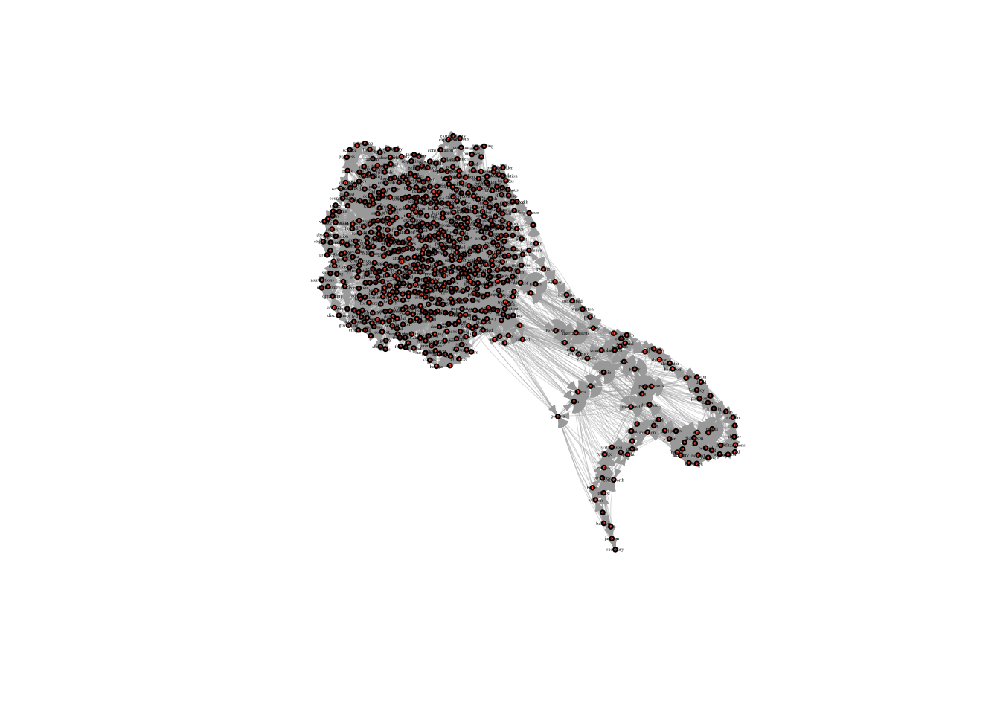
Alternatively, if we want to get rid of the labels, we can just set vertex.label to NA.
plot(constitution_network, vertex.size = 2, vertex.color = "tomato", vertex.label = NA)
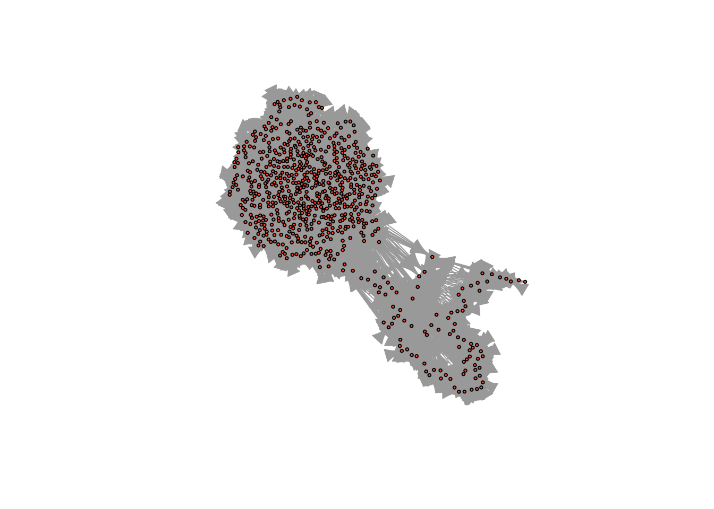
Finally we can make the edges smaller and curved to give them a nicer aesthetic
plot(constitution_network, vertex.size = 2, vertex.color = "tomato", vertex.label.cex = .2, vertex.label.color = "black", edge.curved = .1, edge.arrow.size = .1, edge.width = .2)
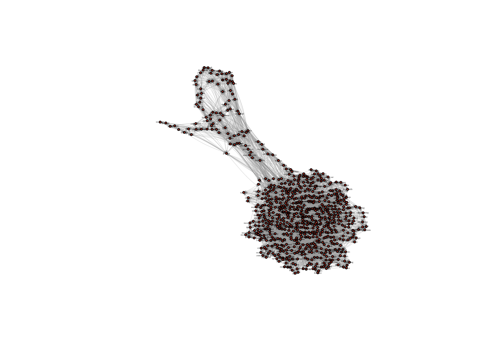
But don’t go too crazy! If you set edge.curved to be greater than .1, it will start to look like spaghetti.
plot(constitution_network, vertex.size = 2, vertex.color = "tomato", vertex.label.cex = .2, vertex.label.color = "black", edge.curved = 1, edge.arrow.size = .1, edge.width = .2)
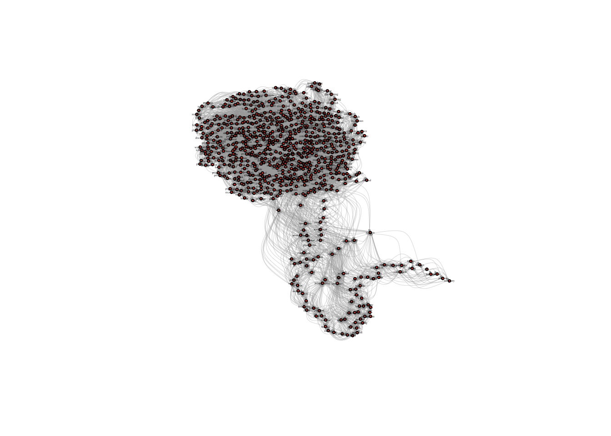
Layouts
igraph has set of layout functions which, when passed a network object, return an array of coordinates that can then used when plotting that network. These coordinates should be saved to a separate R object, which is then called within the plot function. They all have the format: layout DOT algorithm name. For example, layout.kamada.kawai() or layout.fruchterman.reingold()
Kamada Kawai
# first we run the layout function on our graph
kamadaLayout <- layout.kamada.kawai(constitution_network)
# and then we change the default layout setting to equal the layout we generated above
plot(constitution_network, layout = kamadaLayout, vertex.size = 2, vertex.color = "tomato", vertex.label.cex = .2, vertex.label.color = "black", edge.curved = .1, edge.arrow.size = .3, edge.width = .2)
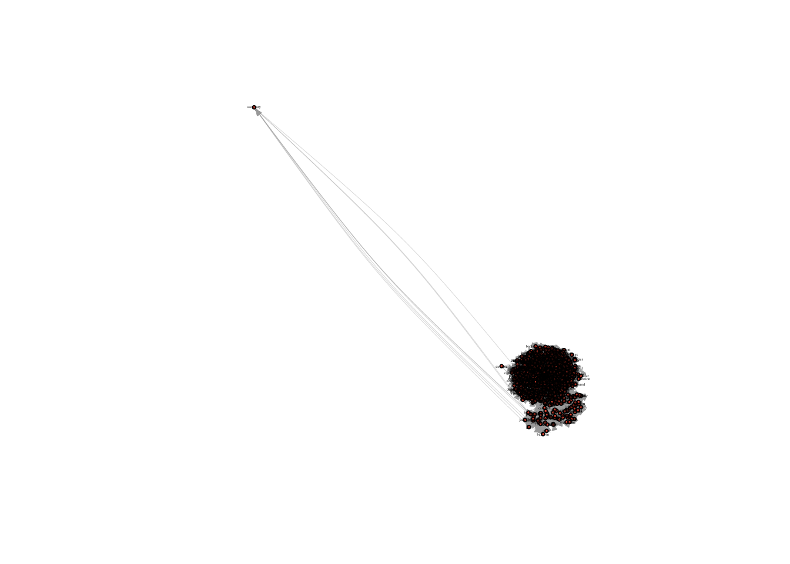
Frucherman-Reingold
# first we run the layout function on our graph
fruchtermanLayout <- layout.fruchterman.reingold(constitution_network)
# and then we change the default layout setting to equal the layout we generated above
plot(constitution_network, layout = fruchtermanLayout, vertex.size = 2, vertex.color = "tomato", vertex.label.cex = .2, vertex.label.color = "black", edge.curved = .1, edge.arrow.size = .3, edge.width = .2)
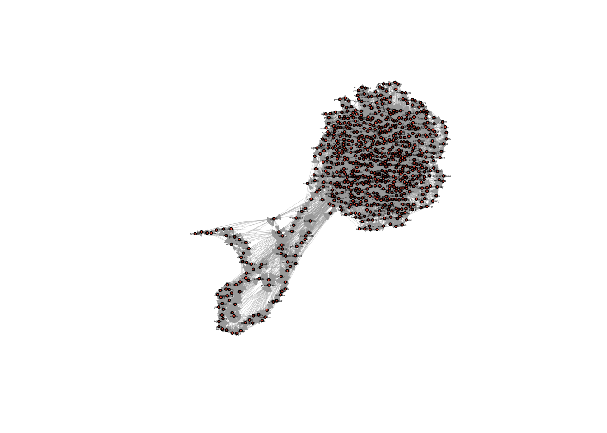
You can see ?layout_ for more options and details.
Group detection
Finally, like we did in the Text as Data week, we can identify groups of words which tend to appear together and color nodes by their group affiliation.
First, identify groups using the wakltrap clustering algorithm and extract their group memberships.
groups <- walktrap.community(constitution_network)
group_memberships <- membership(groups)
Then color nodes by their membership and plot the result.
plot(constitution_network, layout = fruchtermanLayout, vertex.size = 2, vertex.color = group_memberships, vertex.label.cex = .2, vertex.label.color = "black", edge.curved = .1, edge.arrow.size = .3, edge.width = .2)
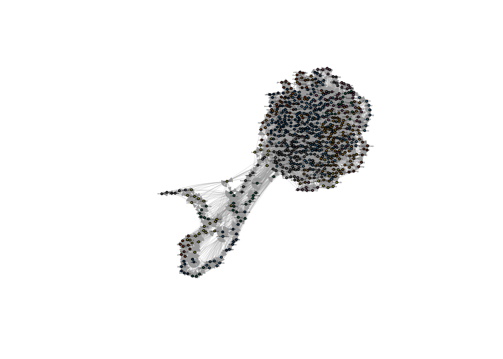
No lab this week! Work on your projects!
10 Social and Semantic Network Analysis
This week our tutorial will cover network analysis. Network analysis focuses on patterns of relations between actors. Both relations and actors can be defined in many ways, depending on the substantive area of inquiry. For example, network analysis has been used to study the structure of affective links between persons, flows of commodities between organizations, shared members between social movement organizations, and shared words between texts. What is common across these domains is an emphasis on the structure of relations, which serves to link the micro- and macro-levels.
10.1 Understanding network data structures
Underlying every network visualization is data about relationships. These relationships can be observed or simulated (that is, hypothetical). When analyzing a set of relationships, we will generally use one of two different data structures: edge lists or adjacency matrices.
10.1.1 Edge lists
One simple way to represent a graph is to list the edges, which we will refer to as an edge list. For each edge, we just list who that edge is incident on. Edge lists are therefore two column matrices that directly tell the computer which actors are tied for each edge. In a directed graph, the actors in column A are the sources of edges, and the actors in Column B receive the tie. In an undirected graph, order doesn’t matter.
In R, we can create an example edge list using vectors and data.frames. I specify each column of the edge list with vectors and then assign them as the columns of a data.frame. We can use this to visualize what an edge list should look like.
What are the upsides of using the edge list format? As you can see, in an edge list, the number of rows accords to the number of edges in the network since each row details the actors in a specific tie. It is therefore really simple format for recording network data in an excel file or csv file.
What are the downsides? The first is practical - it is impossible to represent isolates using an edge list since it details relations. There are ways to get around this problem in R, however. The second is technical - edge lists are not suitable for data formats for performing linear algebraic techniques. As a result, we will almost always convert and edge list into either an adjacency matrix, or into a network object.
10.1.2 Adjacency matrices
Adjacency matrices have one row and one column for each actor in the network. The elements of the matrix can be any number but in most networks, will be either 0 or 1. A matrix element of 1 (or greater) signals that the respective column actor and row actor should be tied in the network. Zero signals that they are not tied.
We can use what we learned in the last tutorial to create such a matrix. An example might look like this:
What are the upsides of using the adjacency matrix format? Adjacency matrices are the most fundamental network analysis data format. They undergird all of the analytical techniques we will show you later on. They are also much more efficient than edge lists. For example, imagine searching for whether Peter and Jill are friends in an adjacency matrix as opposed to an edge list. In the adjacency matrix, we would go to Peter’s row and Jill’s column and we would find either a 1 or a 0, giving us our answer. In an edge list, we would have to search through each edge, which might seem simple in a dataset with only 5 people, but as the edge list grows, it will scale linearly with the number of edges.
What are the downsides? It is really difficult to record network data with an adjacency matrix. They are better suited for computers than people.
10.2 Producing a skip-gram matrix for semantic network analysis and embedding models
In previous lessons, we learned how to fit topic models to many different texts (for example, the Wikipedia pages of philosophers). But what if, as is often the case, you only have a single text, and want to visualize its internal structure? Or, as is the case in embedding models, you want to model not just the set of words that each text has, but rather, the precise sequences of words that are employed in each text. Doing so should reveal not just composition, but how words relate to each other within and across texts; or put differently, the local context in which words appear.
To produce such models, we need a different kind of data from the raw co-occurence matrices we made use of before. We will use what is called a skip-gram model, which counts the number of times a given word appears near another word, with near-ness being defined as some kind of window, say, of 4 or 5 words. A skip-gram window of two, for example, would count the number of times word j appears within the two words immediately before or after word i.
Rather than building a skip-gram model ourselves, we can just use the CreateTcm() function from the textmineR package of last lesson to turn a text of interest into a skip-gram.
First, let’s install the textmineR package, load in some other necessary packages, and grab a text, The Constitution of the United States of America, from the Gutenberg Project to play around with.
All of the above should be familiar: it is the same code we used in both the previous two tutorials. Now, let’s look at some new code. The textmineR package has a super useful function - CreateTcm() - which produces a skip-gram matrix, just like we want. All we have to do is specify the texts we want to run the skip-gram model on, the size of the skip-gram window, and how many cpus we want to use on our computer.
The result is a word-to-word matrix, where cells are weighted by how frequently two words appear in the same window. We can easily turn this into a network.
10.3 From data to networks
To turn our raw network data into an actual network, we will first convert this skip-gram matrix to a similarity matrix, where words are given similar weights if they occur in similar contexts together. To do that, we’ll use the proxy package. First we install it.
Then, we can use the simil function to measure the similarity between words in terms of their co-occurrences with other words. We’ll use cosine distance here, but there are many other distance measures you could consider using.
Cool! Next, we can use igraph, a user-maintained package in R, created for the sole purpose of analyzing networks. Installing igraph gives us a bunch of new tools for graphing, analyzing and manipulating networks, that don’t come with base R. The first step then is to install igraph. As always, to install a new package, we use the install.packages() function. It takes a character argument that is the name of the package you wish to install.
Now that igraph is installed, we need to use the library() function to load it into R.
This will allow us to use all of igraph’s functions. To analyze networks, igraph uses an object class called: “igraph”. We therefore have to convert our skip-gram matrix into an igraph object. Specifically, for our skip-gram matrix, we can use the graph.adjacency() function to do so. We will set weighted = T so that edges are weighted by their skip-gram value (words that more frequently appear in the same context will have higher weights.) Before we do that, we should also set the diagonal of the matrix to 0, so that words aren’t tied to themselves.
10.4 Exploring your network
We finally have a network in R! So.. what next? Well we can read a summary of it by typing its name into R.
The first line - which begins with IGRAPH DN - tells us constitution_network is an igraph object and a directed network (DN), with N nodes and E edges.
The next line tells us some attributes of the nodes and edges network. At the moment, it only has the attribute “name” for the vertices (v/c). We can look at the values of the “name” attribute with the V()$ function.
Finally, the last part gives us a snapshot of the edges present in the network, most of which are omitted.
We can visualize the network using the plot() function.
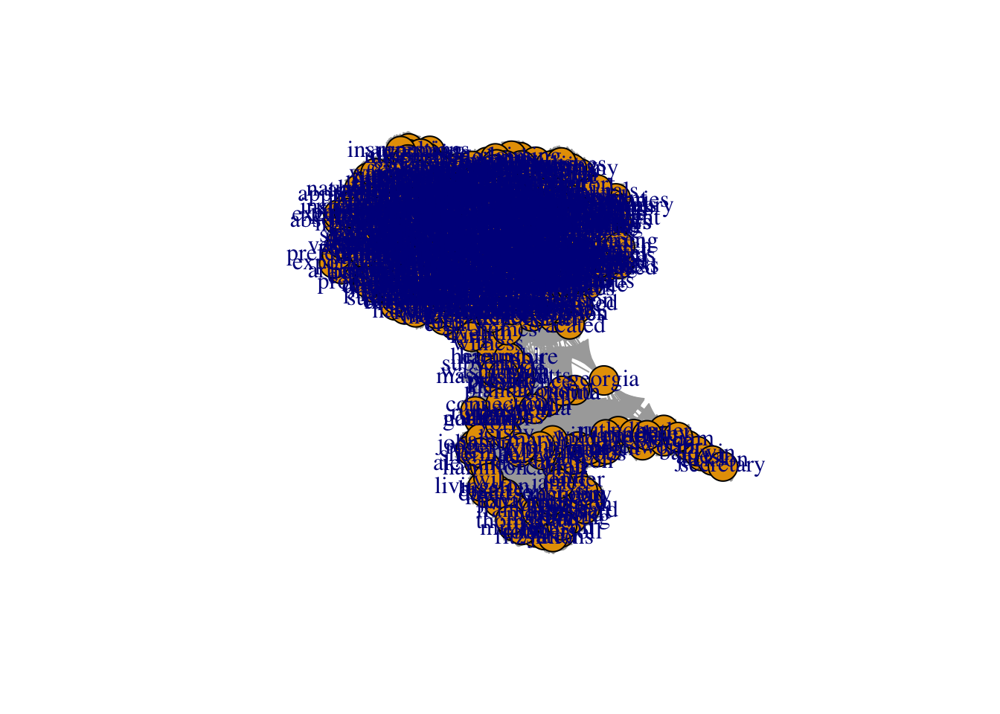
The default visualization is pretty ugly… In the next section, we will learn how to improve the aesthetics of our network visualizations.
10.5 The Basics of Visualization
Let’s start by adjusting the basic visualization. The most basic things we can change are the sizes and colors of nodes. When your network is large, often the nodes will appear too large and clumped together. The argument vertex.size allows you to adjust node size (vertex is the graph-theory term for node!).
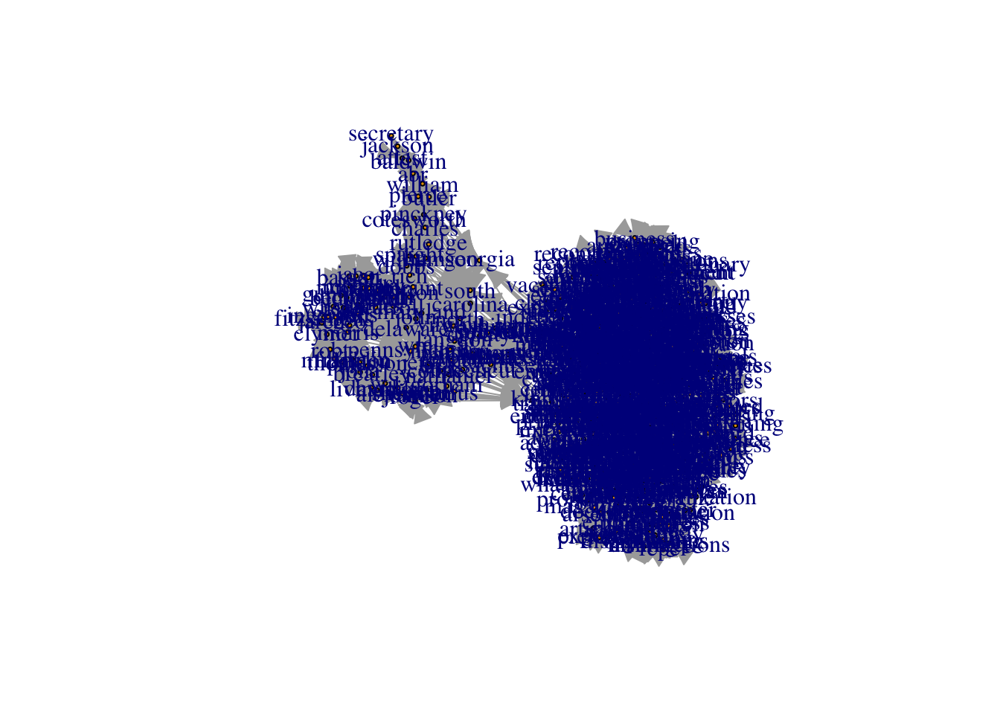
This is the basic way you change the settings of the plot function in igraph - you put a comma next to the next to the network object, type the name of the setting you want to change, and set it to a new value. Here we set vertex.size to 10. When you don’t change any settings, R will automatically use the default settings. You can find them in the help section for that function (i.e. by typing ?plot.igraph, for example). All you have to do is remember the names of the various settings, or look them up at: http://igraph.org/r/
The nodes have an ugly light orange color… We can use vertex.color to change their color to something nicer. We can also remove the ugly black frames by changing the vertex.frame.color setting to NA.
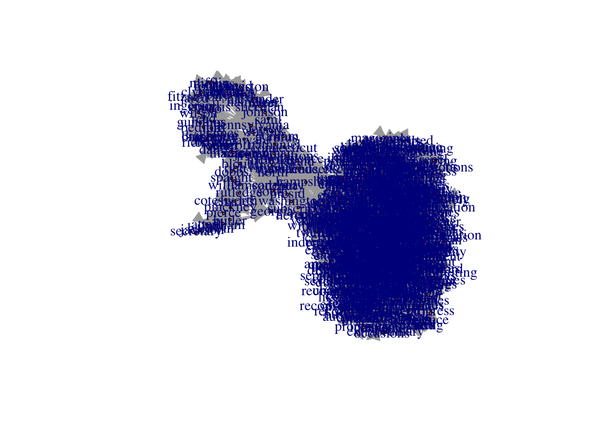
The labels are too large and blue. We can adjust label size with vertex.label.cex. We can adjust the color with vertex.label.color
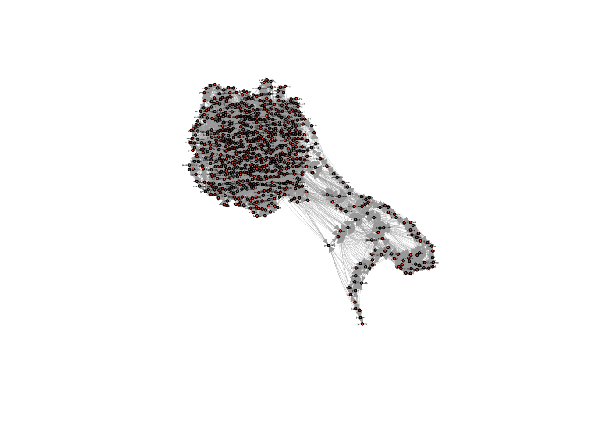
Alternatively, if we want to get rid of the labels, we can just set vertex.label to NA.
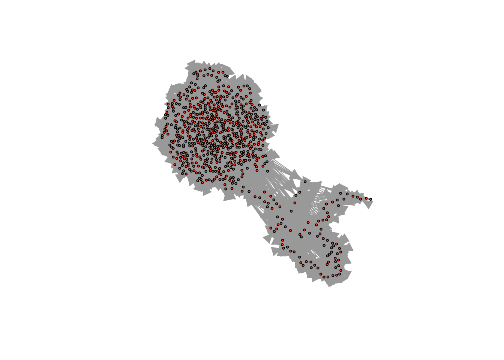
Finally we can make the edges smaller and curved to give them a nicer aesthetic
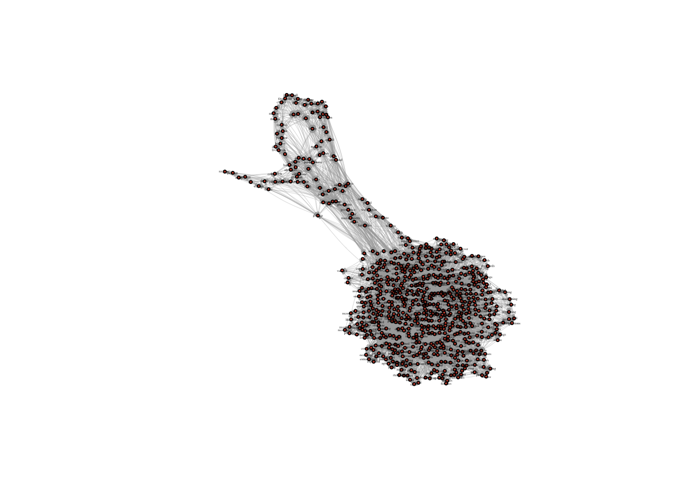
But don’t go too crazy! If you set edge.curved to be greater than .1, it will start to look like spaghetti.
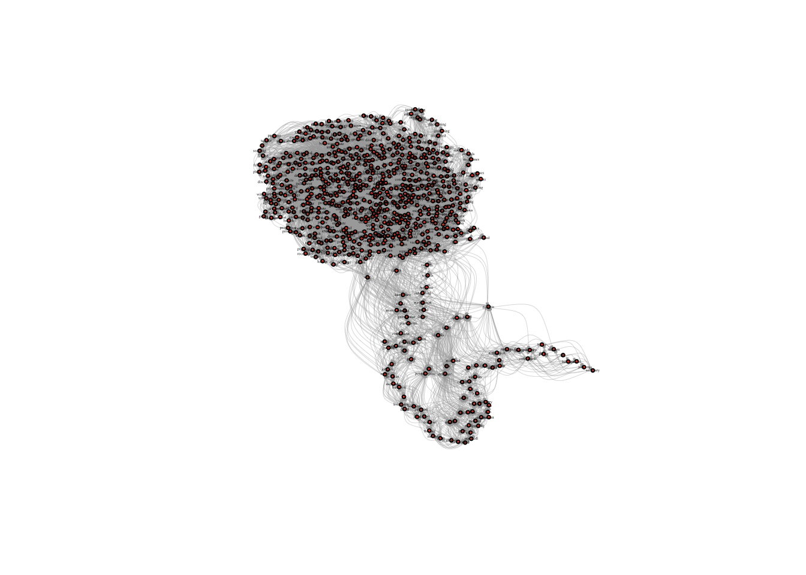
10.6 Layouts
igraph has set of layout functions which, when passed a network object, return an array of coordinates that can then used when plotting that network. These coordinates should be saved to a separate R object, which is then called within the plot function. They all have the format: layout DOT algorithm name. For example, layout.kamada.kawai() or layout.fruchterman.reingold()
Kamada Kawai
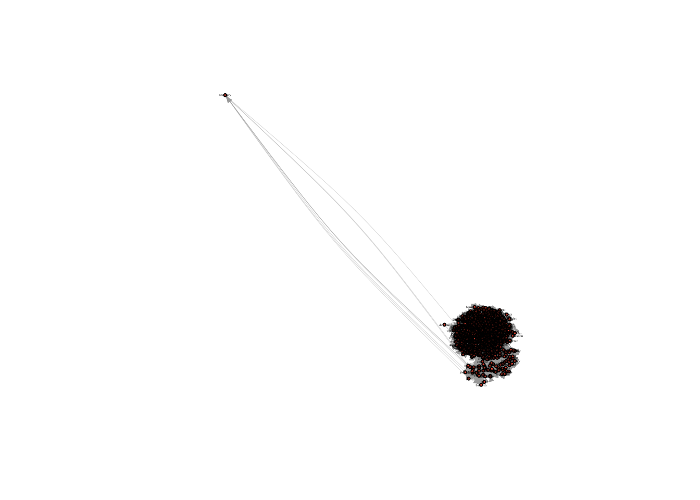
Frucherman-Reingold
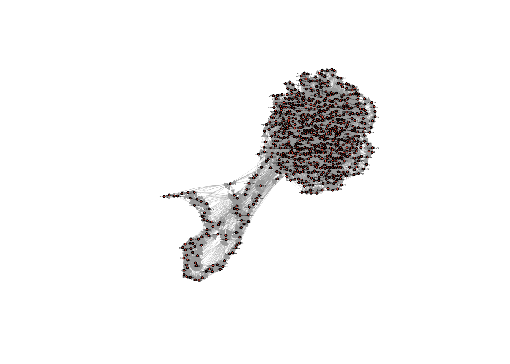
You can see ?layout_ for more options and details.
10.7 Group detection
Finally, like we did in the Text as Data week, we can identify groups of words which tend to appear together and color nodes by their group affiliation.
First, identify groups using the wakltrap clustering algorithm and extract their group memberships.
Then color nodes by their membership and plot the result.
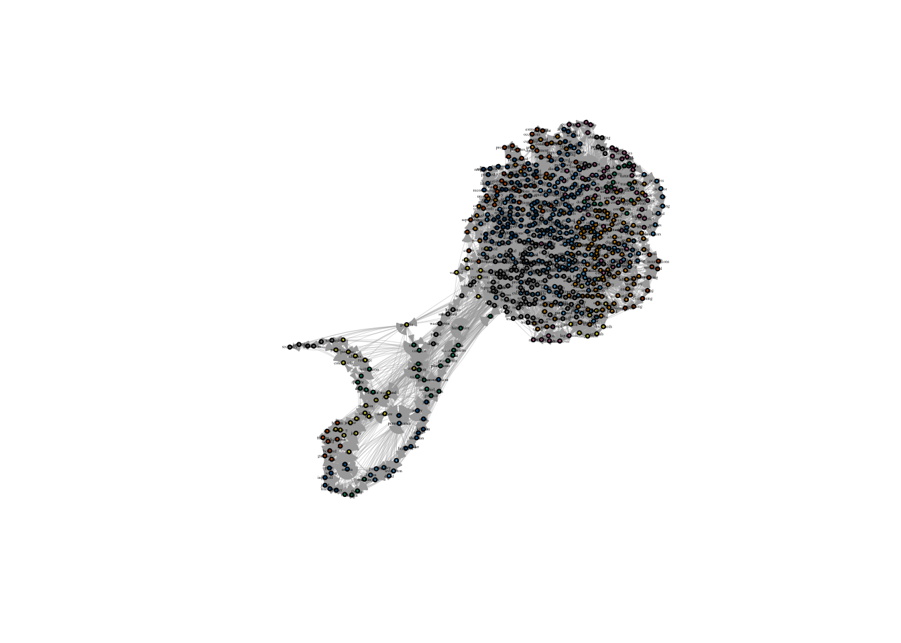
No lab this week! Work on your projects!